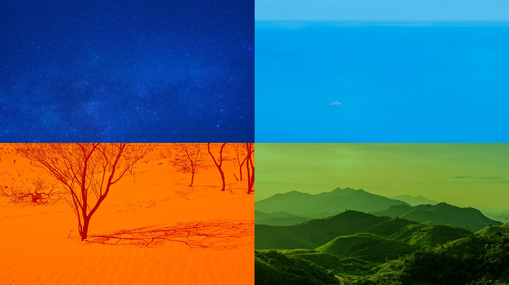
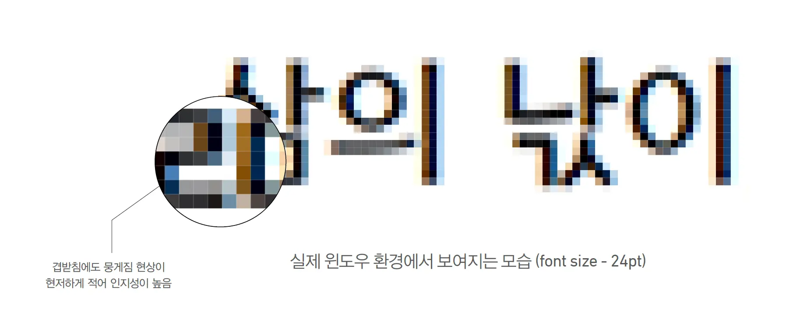

성격은 무엇인가.
24시간 운영되는 숙박 B2B 도구가 어떤 업무와 책임을 가져야 하는지 정의했습니다.
호텔·모텔 프론트의 사용 환경과 운영 효율을 하나의 UX 기준으로 연결했습니다.
서비스 성격, 전달 가치, 사용 환경, 일관된 경험 조건을 먼저 확인했습니다.
24시간 운영되는 숙박 B2B 도구가 어떤 업무와 책임을 가져야 하는지 정의했습니다.
브랜드 인상보다 업무의 명확성·효율성·생산성을 먼저 판단 기준으로 삼았습니다.
프론트 근무자의 조도·이동·시선 단절과 실제 업무 조건을 확인했습니다.
공통 UX와 제품별 차이를 함께 유지할 시스템 기준이 필요했습니다.
호텔·모텔 B2B 제품군의 핵심 가치를 명확성·효율성·생산성·신뢰로 정리했습니다.
연령·역할, 모니터, 조도, 업무 자세와 이동 패턴을 디자인 기준으로 전환했습니다.
호텔 reception/cashier desk 300 lx를 디자인 검토 기준으로 삼았습니다.
응대 중에도 예약 상태와 주요 행동이 바로 보여야 했습니다.
공통 구조를 유지하고 컬러·핵심 컴포넌트로 제품을 구분했습니다.
색이 달라도 텍스트·명도·형태로 같은 정보 위계를 유지했습니다.
공통성을 유지하면서 제품별 특성을 더해, 신뢰할 수 있는 시스템을 목표로 했습니다.
예약·객실·알림의 우선순위를 짧은 시선에도 구분했습니다.
반복 행동을 같은 위치와 패턴으로 구성해 학습 비용을 줄였습니다.
공통 컴포넌트에 제품별 컬러와 특화 요소를 더했습니다.
형태·대비·피드백을 일관되게 유지해 업무 신뢰를 높였습니다.
상황을 빠르게 파악하도록 시인성과 정보 인지성을 높였습니다.
국가·언어·색각 차이에도 같은 정보 위계를 유지했습니다.
공통 요소와 제품별 특화 요소로 일관성과 구분감을 함께 만들었습니다.
빠른 인지, 환경 대응, 일관된 UX를 컬러·형태·타이포·컴포넌트에 연결했습니다.
짧은 시간에 상태를 판단하는 B2B 업무 흐름을 기준으로 삼았습니다.
색뿐 아니라 명도·텍스트·형태가 함께 정보 위계를 만들도록 했습니다.
공통 컴포넌트는 공유하고 제품별 컬러·특화 요소로 구분했습니다.
하늘·바다·노을·산처럼 여행에서 반복해서 만나는 색을 제품군의 Primary·Secondary 컬러로 확장했습니다.

글로벌 B2B 환경에서 익숙하게 받아들여지고, 다양한 근무자가 구분하기 쉬운 색 체계를 함께 검토했습니다.
적–녹 색각이상은 남성 약 8%(약 1/12)에서 나타날 만큼 흔합니다. 블루는 미국·일본 비교 연구에서도 공통적으로 높은 선호를 보여, Space Blue를 대표색으로 선택하고 상태 정보는 텍스트·형태와 함께 구분했습니다.
Normal / Deutan / Protan 조건을 비교해 컬러가 어떻게 달라지는지 확인하고, 블루를 중심으로 텍스트·아이콘·명도 차이를 함께 적용했습니다.
호텔 리셉셔니스트는 장시간 서서 고객 응대와 VDT 입력을 반복하고, 화면과 고객 사이로 시선이 계속 이동합니다. 낮은 조도와 짧은 재확인 상황에서도 상태와 행동 위계를 찾을 수 있도록 형태·대비·색상을 조정했습니다.
장시간 서서 고객을 응대하면서 화면을 짧게 다시 보는 환경을 고려해, 과도하게 둥근 형태보다 작은 Radius를 사용했습니다. 주요 행동은 채움으로, 보조 행동은 외곽선으로 빠르게 구분했습니다.
예약·체크인·취소처럼 고객을 보며 연속 처리하는 업무에서 오조작을 줄이기 위해, Primary와 Secondary의 대비·형태·간격을 명확하게 나눴습니다.
호텔 프론트의 reception desk는 300 lx가 조명 설계 기준으로 제시되는 업무 영역입니다. 환경 변화에 대응하면서 일반 텍스트 4.5:1, UI 상태 3:1의 대비 기준을 함께 확인했습니다.
고객 응대와 VDT 업무가 반복되는 프론트에서는 시선이 자주 화면 밖으로 이동합니다. Light / Dark 환경에서도 Primary 버튼이 먼저 보이도록 채도와 대비를 조정했습니다.
체크인 가능 객실을 확인합니다.
체크인 가능 객실을 확인합니다.
운영 화면에서 자주 쓰는 10·12·14px과 복잡한 한글 자소가 실제 Windows 환경에서 어떻게 보이는지 확인하고, 작은 크기에서도 획과 글자 형태가 분명한지 검토했습니다.

Normal/Small과 Hover·Pressed·Disabled 상태를 공통 규칙으로 설계했습니다.
그룹 내 주요 제품은 기능적 특성에 맞는 UI 컴포넌트와 대표 컬러로 구분하되, 공통 규칙으로 일관성을 유지했습니다. 운영 효율이 중요한 B2B에는 정보 위계와 빠른 액션을, HST GROUP GUEST SERVICE 같은 B2C에는 직관성과 함께 호텔의 고급스러움·브랜드 가치가 드러나는 레이아웃과 콘텐츠 규칙을 적용했습니다.
조도·이동·응대 방식·반복 업무 등 현장의 조건을 관찰하고, 이를 컬러·타이포·컴포넌트의 공통 기준으로 연결했습니다.
현장 업무의 속도와 정확도를 핵심 문제로 정의했습니다.
근무자·모니터·조도·이동 등 실제 사용 조건을 수집했습니다.
명확성·효율성·접근성·제품 패밀리를 공통 원칙으로 전환했습니다.
컬러·형태·타이포·컴포넌트의 기준을 하나의 체계로 조율했습니다.
반복 판단을 줄여 개발·운영 과정의 생산성을 높였습니다.
공통 규칙을 여러 B2B 제품에 반복 적용할 수 있는 구조로 정리했습니다.